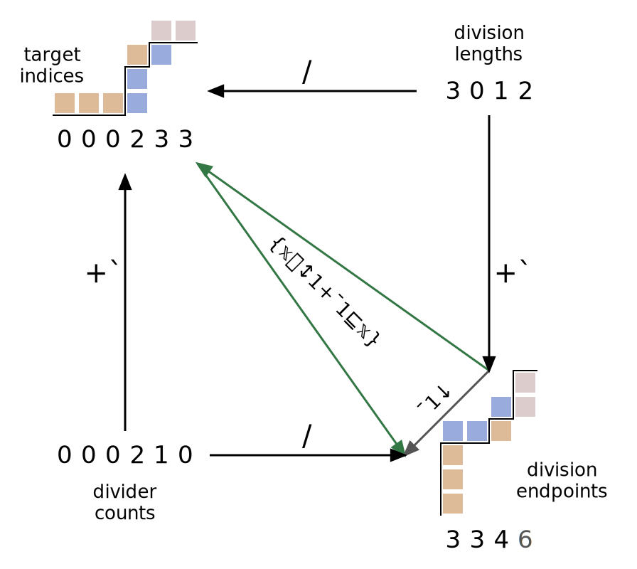

04/13/2023
Discussing the different ways partitions can be represented in BQN.
This post is a BQN edition of an excellent article by Marshall on the APL wiki called Partition representations. If you haven't already seen it and are comfortable with APL, go check it out! If you are comfortable with BQN but not APL, then stick around.
While it's not that hard for someone familiar with BQN to learn APL, I wanted to make Marshall's article more accessible to a BQN audience.
For the most part I'll just be copying text from the original article and replacing APL expressions and terminology with their BQN equivalents. I've removed some references to APL-specific functionality and added more discussion of BQN-specific functionality. I've dropped the Mesh section, added a discussion of a relevant problem that came up in the BQN chat forum, and written a short conclusion.
Many thanks to Marshall for tracking down the original SVG of the Square of Power diagram, so that I could make a BQN version.
All content I've taken from the APL wiki is available under the CC BY-SA license, and therefore this blog post is available under the same license.
In this page, a partition of a list is defined to be a non-empty nested list containing lists, such that the Join (∾) of the partition intolerantly Matches (≡) the original list. A partition contains all the original elements of the list, in the same order, but at one greater depth.
The lists contained in a partition are called divisions, and the boundaries between them are called dividers. Although the English word "partition" can be used for either of these, the ambiguity of using one word for three different objects could be confusing. Only boundaries between divisions are called dividers: we do not name the two outermost edges, which must exist in any partition.
We consider two partitions of a list to be identical if they match, ignoring fills. Since partitions of the same list contain the same data, and in the same order, they match when they have identical structure. The partition representations discussed below are ways of encoding structure; a desirable quality of a partition representation is that two partitions match exactly when their representations match.
Perhaps the most obvious way to represent a partition of a list x is using a list of lengths l such that (+´l) = ≠x.
l gives the length of each division in order, that is, for a partition p of x, l ≡ ≠¨p.
Because the length list is determined by the partition in this way, two different length lists cannot lead to the same partition.
We can obtain a partition from the division lengths by using Take (↑) twice to obtain each division.
In the process, we must compute the division endpoints +`l using a Plus Scan.
l ← 2‿0‿3‿3 x ← "abcdefgh" +`l ⟨ 2 2 5 8 ⟩ (+`l) ↑¨ <x ⟨ "ab" "ab" "abcde" "abcdefgh" ⟩ (-l) ↑¨ (+`l) ↑¨ <x ⟨ "ab" ⟨⟩ "cde" "fgh" ⟩
The division endpoints are another way to represent partitions.
The endpoints +`l computed above form a non-decreasing list of non-negative integers whose last element is equal to the length of the partitioned list.
It would also be possible to use the partition starting points +`¯1↓0∾l; here we use only endpoints for consistency.
The latter representation matches K's Cut function, which produces a complete partition exactly when the left argument contains a zero (otherwise, some initial elements are omitted).
Lists of division endpoints correspond exactly to lists of division lengths, because the pair-wise difference -⟜»e is an exact inverse of Plus Scan which obtains division lengths l from endpoints e.
By the way, +`⁼e also works as the inverse of Plus Scan.
Existing APLs rarely define partitioning functions using properties of the resulting divisions.
Instead, most partition functions use a list of the same length as the partitioned list to control how it is partitioned.
Indeed, BQN's Group (⊔) falls into this category.
As another example, APL's Partitioned Enclose starts a new division whenever a 1 is encountered in the Boolean left argument.
Partitioned Enclose is usually represented by ⊂, but here I've defined it in terms of Group and named it PE.
PE ← (+`-1˙)⊸⊔ 1‿0‿1‿1‿0‿0‿1 PE "abcdefg" ⟨ "ab" "c" "def" "g" ⟩
This style of partition function is slightly harder to understand and implement, but does have advantages:
- The left argument can sometimes be obtained directly from the right argument. For example, a division might be started whenever a space is encountered.
- Left arguments can be merged using arithmetic.
For two Partitioned Enclose arguments a and b, the Maximum a⌈b gives a common refinement of the two corresponding partitions.
This definition of Partitioned Enclose also allows empty divisions to be produced by using integers greater than 1 in the left argument.
1‿0‿2‿1‿0‿0‿2 PE "abcdefg" ⟨ "ab" ⟨⟩ "c" "def" ⟨⟩ "g" ⟩
Below, we discuss a modification to Partitioned Enclose that is more natural and fits a little better with Group.
First, we discuss the only partition representation directly used by a BQN primitive, that primitive being Group. Each element of the left argument of Group specifies the index of the division to which the corresponding element of the right argument belongs.
In order for this to produce a partition, the left argument must be a list of non-decreasing non-negative integers (as with the division endpoint representation). Then for a left argument l the number of divisions is 1+⊢´l, one more than the last element.
1‿1‿3‿3‿3‿3‿6 ⊔ "abcdefg" ⟨ ⟨⟩ "ab" ⟨⟩ "cdef" ⟨⟩ ⟨⟩ "g" ⟩
Note that empty divisions are inserted when the index increases (including from an implicit initial index of ¯1) based on how many indices were skipped (since the divisions with those indices can't contain any elements).
Target indices can be converted to division endpoints using Bins Up (⍋), and then to division lengths with a pair-wise difference:
1‿1‿3‿3‿3‿3‿6 ⊔ "abcdefg"
⟨ ⟨⟩ "ab" ⟨⟩ "cdef" ⟨⟩ ⟨⟩ "g" ⟩
1+⊢´1‿1‿3‿3‿3‿3‿6 # number of divisions
7
↕1+⊢´1‿1‿3‿3‿3‿3‿6
⟨ 0 1 2 3 4 5 6 ⟩
1‿1‿3‿3‿3‿3‿6 ⍋ ↕1+⊢´1‿1‿3‿3‿3‿3‿6
⟨ 0 2 2 6 6 6 7 ⟩
{𝕩⍋1+↕⊢´𝕩} 1‿1‿3‿3‿3‿3‿6 # division endpoints
⟨ 0 2 2 6 6 6 7 ⟩
-⟜»{𝕩⍋1+↕⊢´𝕩} 1‿1‿3‿3‿3‿3‿6 # division lengths
⟨ 0 2 0 4 0 0 1 ⟩
Division endpoints can also be converted to target indices using the same idea.
⊢´0‿2‿2‿6‿6‿6‿7 # number of elements
7
↕⊢´0‿2‿2‿6‿6‿6‿7
⟨ 0 1 2 3 4 5 6 ⟩
0‿2‿2‿6‿6‿6‿7 ⍋ ↕⊢´0‿2‿2‿6‿6‿6‿7
⟨ 1 1 3 3 3 3 6 ⟩
{𝕩⍋↕⊢´𝕩} 0‿2‿2‿6‿6‿6‿7 # target indices
⟨ 1 1 3 3 3 3 6 ⟩
When converting from target indices to division endpoints,
we use 1+⊢´ to get the number of divisions and ⍋ to find where the divisions sit relative to the elements.
When converting from division endpoints to target indices,
we use ⊢´ to get the number of elements and ⍋ to find where the elements sit relative to the divisions.
If we just use {𝕩⍋↕⊢´𝕩} twice to convert from division endpoints to target indices and then back again, we end up dropping the last division endpoint.
{𝕩⍋↕⊢´𝕩} 0‿2‿2‿6‿6‿6‿7
⟨ 1 1 3 3 3 3 6 ⟩
{𝕩⍋↕⊢´𝕩}⍟2 0‿2‿2‿6‿6‿6‿7
⟨ 0 2 2 6 6 6 ⟩
This conversion between target indices and division endpoints can be used to show that like division endpoints and division lengths, target indices represent partitions bijectively. However, there is a concern regarding the final element, which is used to find the length of the division length list above, that is, the number of divisions. If the target indices correspond exactly to the elements of the partitioned list, then the last target index is the index of the last non-empty division. However, it is valid in a partition to include empty divisions at the end. In order to represent such divisions, we must allow an additional index after the last element of the partitioned list.
Group allows an extra element at the end of its left argument, which is taken to be the the total number of divisions.
The target index of an element is the same as the number of dividers which fall before it. Motivated by this fact, we might use the pair-wise differences of the target indices as another partition representation. Taking differences converts the total number of dividers before each element to the number of dividers immediately preceding it. For example, the list below encodes the same partition as that shown in the previous section.
-⟜» 1‿1‿3‿3‿3‿3‿6 ⟨ 1 0 2 0 0 0 3 ⟩ 1‿0‿2‿0‿0‿0‿3 +`⊸⊔ "abcdefg" ⟨ ⟨⟩ "ab" ⟨⟩ "cdef" ⟨⟩ ⟨⟩ "g" ⟩
As with the Partition-based representation, we must allow an additional element in the left argument after the end of the right argument in order to encode empty divisions after the end of the data.
This definition is nearly identical to the one used in Partitioned Enclose when the divider counts are Boolean. The only difference is in the first element: while in Partitioned Enclose a first element of 0 indicates that no division is started, and elements before the first 1 are excluded from the final division, in the version here, a first element of 0 is like a 1 in Partitioned Enclose indicating that a division is started, while an initial 1 indicates that an empty division precedes the first non-empty division. The number used in the representation here is one higher than the one used by Partitioned Enclose. This encoding better represents complete partitions of the right argument because every list of non-negative integers corresponds to a partition. In Partitioned Enclose lists beginning with 0 correspond to incomplete partitions where some initial elements are not included. However, the partitioning used in Partitioned Enclose can still be produced by dropping the first division.
The division-based and divider-based representations are dual to one another: counting the number of elements with no divisions in between and the number of dividers with no elements in between are symmetric concepts. We can convert between them using Indices (/) and its inverse. The following diagram, dubbed the "Square of Power" by Marshall, shows the relationships between the four representations. Note the symmetry in the graphs for target indices and division endpoints: the graphs are essentially transposes of one another. The Bins Up (⍋) function can be used to convert between these two representations directly.

The relationship between the two kinds of partition representations is in principle symmetric, but we must introduce an asymmetry in order to handle the final division or divider (for infinite arrays there would be no need). There can always be elements past the last divider, or dividers beyond the last element. But dividers are placed between elements, and elements between dividers: effectively, they are offset by a half-index. Going halfway around the square above must either accumulate or remove a half index; going all the way around by using the same transformation twice would add or drop an entire index. We must insert a step at some point in the cycle to account for this index, but it can be placed in any part of the diagram—there is no reason it must be in the lower-right corner as above.
The partitioning mechanisms shown above can be grouped in categories in several ways. The left and right halves of the diagram each contain lists of the same length. This is because the lists have the same domain: on the left, a value is given for each element to be partitioned, while on the right a value is given for each division or divider. The top and bottom halves also share common properties: representations on the top specify where elements should be placed (using either dense indices giving a position for each element or sparse indices giving how many elements go in each slot) while those on the bottom specify where dividers should be placed in the same sense.
Another grouping appears when considering how values are indicated. The divider counts and division lengths are counts, while the target indices and division endpoints are indices. This difference is reflected in the domains of these representations: while counts are allowed to be any list of non-negative integers, indices must additionally be non-decreasing.
On the BQN chat forums lukas and Genghius were discussing problem 13 of the OCaml 99 problems: "Run-length encoding of a list (direct solution). Don't explicitly create the sublists containing the duplicates, only count them."
dzaima suggested the following:
»⊸≠ "aaaabccbaadeeee" ⟨ 1 0 0 0 1 1 0 1 1 0 1 1 0 0 0 ⟩ / »⊸≠ "aaaabccbaadeeee" ⟨ 0 4 5 7 8 10 11 ⟩ -⟜» / »⊸≠ "aaaabccbaadeeee" ⟨ 0 4 1 2 1 2 1 ⟩
And lukas had basically the same idea, but it was both messier and more complete.
In terms of partition representations,
the rough idea is that we use »⊸≠ to get divider counts, / to get division endpoints, and -⟜» to get division lengths,
working our way counterclockwise from the bottom left corner to the top right corner of the Square of Power.
This gets us most of the way there, but we shouldn't have that 0 at the front, and we need a 4 at the end for the last run.
One way to look at the problem is that »⊸≠ isn't quite right, since it starts the divider counts with a 1 instead of a 0.
And even if we make the first element 0 (say, by using ⊑⊸»⊸≠) then / still doesn't address the lost index problem noted in the bottom right corner of the diagram.
Anyway, /»⊸≠ ends up getting the division startpoints, not endpoints.
Then -⟜» doesn't get us the division lengths because that only works on division endpoints, not startpoints.
These kinds of "mismatches" are a common issue, but I find they're easily addressed, and the theory still gives us conceptual clarity.
One way to address the mismatch is to change -⟜», shifting in the length of the original list at the end.
≠"aaaabccbaadeeee"
15
/ »⊸≠ "aaaabccbaadeeee"
⟨ 0 4 5 7 8 10 11 ⟩
15 « / »⊸≠ "aaaabccbaadeeee"
⟨ 4 5 7 8 10 11 15 ⟩
{(15 « 𝕩) - 𝕩} / »⊸≠ "aaaabccbaadeeee"
⟨ 4 1 2 1 2 1 4 ⟩
{(≠𝕩)⊸«⊸- / »⊸≠ 𝕩} "aaaabccbaadeeee"
⟨ 4 1 2 1 2 1 4 ⟩
This takes us from division startpoints to division lengths.
Another approach is to calculate the division endpoints to begin with, and leave the -⟜» alone.
«⊸≠ "aaaabccbaadeeee" ⟨ 0 0 0 1 1 0 1 1 0 1 1 0 0 0 1 ⟩ / «⊸≠ "aaaabccbaadeeee" ⟨ 3 4 6 7 9 10 14 ⟩ 1 + / «⊸≠ "aaaabccbaadeeee" ⟨ 4 5 7 8 10 11 15 ⟩ -⟜» 1+/ «⊸≠ "aaaabccbaadeeee" ⟨ 4 1 2 1 2 1 4 ⟩
We can turn either idea into a full solution:
{m←»⊸≠𝕩 ⋄ ((≠𝕩)⊸«⊸- / m) ⋈¨ m/𝕩} "aaaabccbaadeeee"
⟨ ⟨ 4 'a' ⟩ ⟨ 1 'b' ⟩ ⟨ 2 'c' ⟩ ⟨ 1 'b' ⟩ ⟨ 2 'a' ⟩ ⟨ 1 'd' ⟩ ⟨ 4 'e' ⟩ ⟩
{m←«⊸≠𝕩 ⋄ (-⟜» 1+/ m) ⋈¨ m/𝕩} "aaaabccbaadeeee"
⟨ ⟨ 4 'a' ⟩ ⟨ 1 'b' ⟩ ⟨ 2 'c' ⟩ ⟨ 1 'b' ⟩ ⟨ 2 'a' ⟩ ⟨ 1 'd' ⟩ ⟨ 4 'e' ⟩ ⟩
Rampoina and Marshall each suggested solutions that go the opposite way around the Square of Power.
Here's Marshall's:
»⊸≠ "aaaabccbaadeeee"
⟨ 1 0 0 0 1 1 0 1 1 0 1 1 0 0 0 ⟩
+` »⊸≠ "aaaabccbaadeeee"
⟨ 1 1 1 1 2 3 3 4 5 5 6 7 7 7 7 ⟩
¯1 +` »⊸≠ "aaaabccbaadeeee"
⟨ 0 0 0 0 1 2 2 3 4 4 5 6 6 6 6 ⟩
/⁼ ¯1 +` »⊸≠ "aaaabccbaadeeee"
⟨ 4 1 2 1 2 1 4 ⟩
{m←»⊸≠𝕩 ⋄ (/⁼ ¯1 +` m) ⋈¨ m/𝕩} "aaaabccbaadeeee"
⟨ ⟨ 4 'a' ⟩ ⟨ 1 'b' ⟩ ⟨ 2 'c' ⟩ ⟨ 1 'b' ⟩ ⟨ 2 'a' ⟩ ⟨ 1 'd' ⟩ ⟨ 4 'e' ⟩ ⟩
We start with the same divider counts as in dzaima's suggestion, but now we perform a Plus Scan and an inverse Indices, working our way clockwise around the Square of Power.
We need to start the scan at ¯1 to account for the mismatch.
Marshall notes that the solution with / is a few times faster than the solution with /⁼.
Problems like these can feel bewildering, especially when you're new to array programming.
But with knowledge of the Square of Power, we have a good conceptual framework to start from.
We notice that we can detect boundaries between the runs with something like »⊸≠,
and we notice that these boundaries are some kind of divider count.
We know we need the run-lengths, which are the same as the division lengths.
Now we just pick a route and travel around the square, taking some care to handle little "mismatches" as I've called them.
Partition representations show up constantly in BQN. Whether you know about the Square of Power or not, you're probably implicitly using it all the time. Explicitly recognizing which partition representations a program is using and how it converts between them can help you write more elegant and easily understood code. Happy array programing! <3